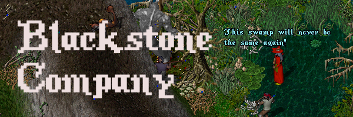

The Blackstone Company
The Blackstone Company is a mercenary guild on the Outlands Ultima Online free server. We are a group of fighters in search of fortune and glory against all odds and all opposition.
The character that will fit in best is a thrill-seeking adventurer with dollar signs for eyes, but there is room for all comers. After all, the company needs equipment made, drinks served, and a place to spend their gold!
We have a heavy emphasis on roleplay, and while we participate in all aspects of the game, we like to use it as a platform for storytelling. Members are expected to be in character the majority of the time.
Interested? Hop into the Discord and say hello!
Company By-laws
- Be good to your fellow Company members. Follow your heart with anyone else.
- Gold raised on an expedition is split equally amongst those present.
- The needy get first dibs on equipment gathered.
- Other treasure goes to the fastest hands.
- Disputes are resolved one of two ways: combat or dice. The challenged party chooses which. No disputing the results.
Attire
The company doesn’t have much in the way of a uniform. Resources are scarce, and who likes to follow the crowd, anyway? We do like to be able to spot each-other in a brawl, though.
- Red bandana.
- Red kilt, granted to those who have successfully returned from a Company expedition.
- Red sash/shirt, granted to those who’ve killed in the service of the company, including in self-defence. A painting and the head of your foe will serve as proof.
Hierarchy
Decisions are made by vote. All Company members get a vote, but the votes of members with red sashes are worth one and a half.
OOC Rules & Other Notes
- Be nice to each other OOC.
- Remain IC when interacting with other role players.
- Remain IC the rest of the time if at all possible.
- This is a dangerous shard, and you are likely to be PKed, looted and have some generally unpleasant interactions with non-RPers. Please be emotionally prepared for that and keep complaints to a minimum. There will be time for revenge later.
- Be considerate when fighting members of members of roleplaying guilds that we have a prior conflict agreement with. Warn them before attacking, and refrain from looting them.
- (Being caught) committing serious enough breaches of the IC by-laws may result in your character being cast out of the company. Please consider this an IC punishment, not an OOC one. You are welcome to rejoin on another character, and ideally continue playing your exile as an enemy of the group.
~ Derek Lumbar, Company Founder